1. ОД — Общие данные
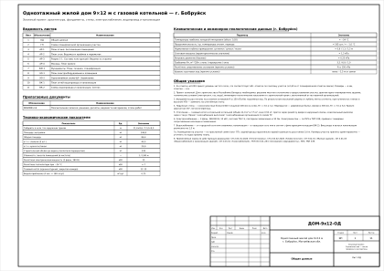
2. ГП — Схема планировочной организации участка
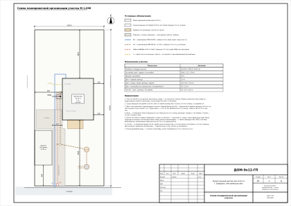
3. АР-1 — План этажа. Экспликация помещений
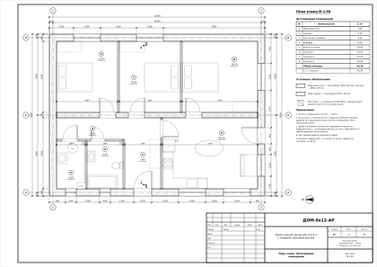
4. АР-2 — План стен. Ведомости проёмов и перемычек
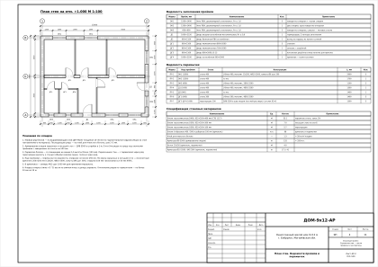
5. АР-3 — Разрез 1-1. Составы конструкций. Ведомость отделки
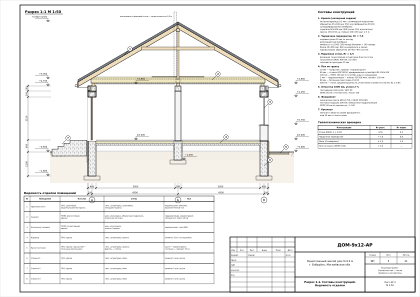
6. АР-4 — Фасады. План кровли
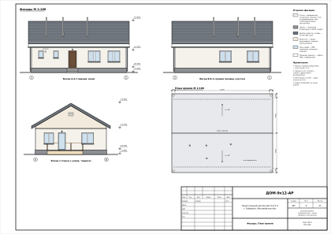
7. КЖ-1 — Фундаменты. План, сечения, спецификация
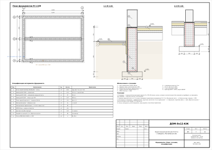
8. ЭО-1 — План электрооборудования и освещения
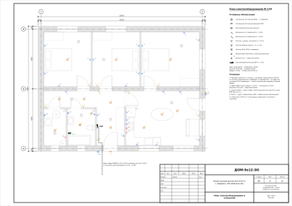
9. ЭО-2 — Однолинейная схема ЩР. Заземление
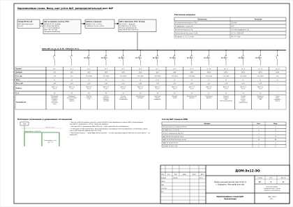
10. ВК-1 — План сетей водопровода и канализации
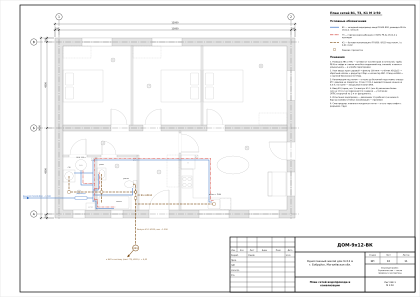
11. ВК-2 — Схемы водопровода и канализации. Септик
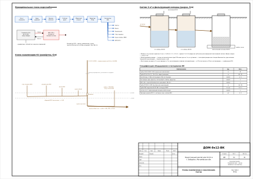